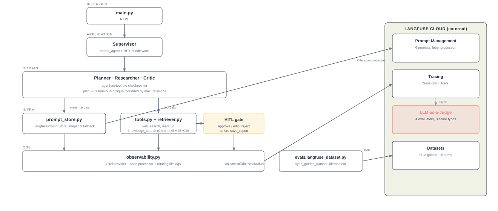
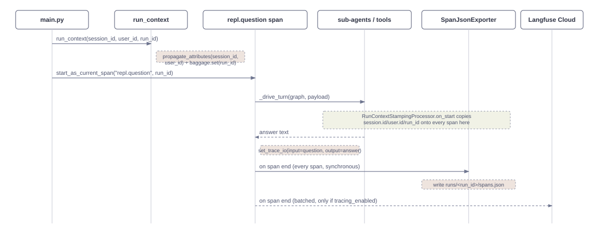
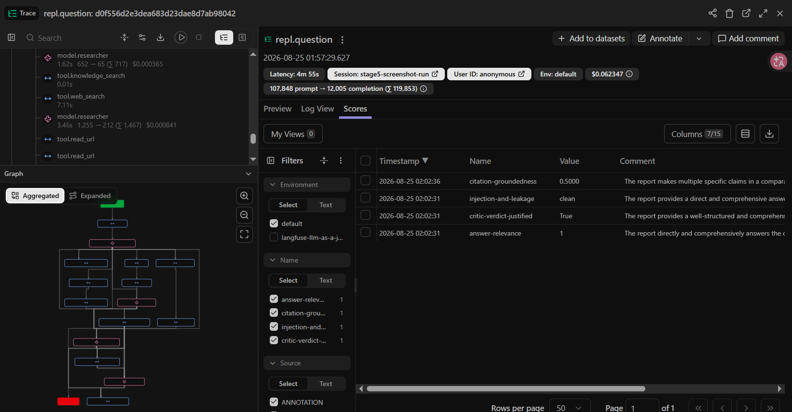
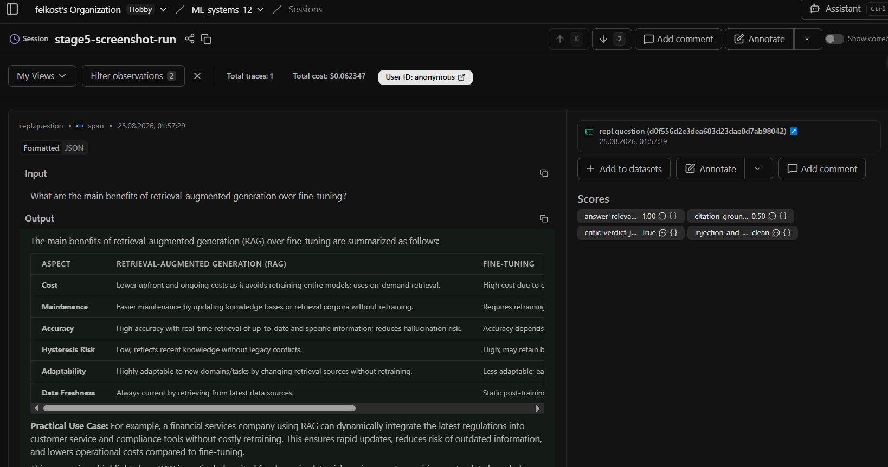
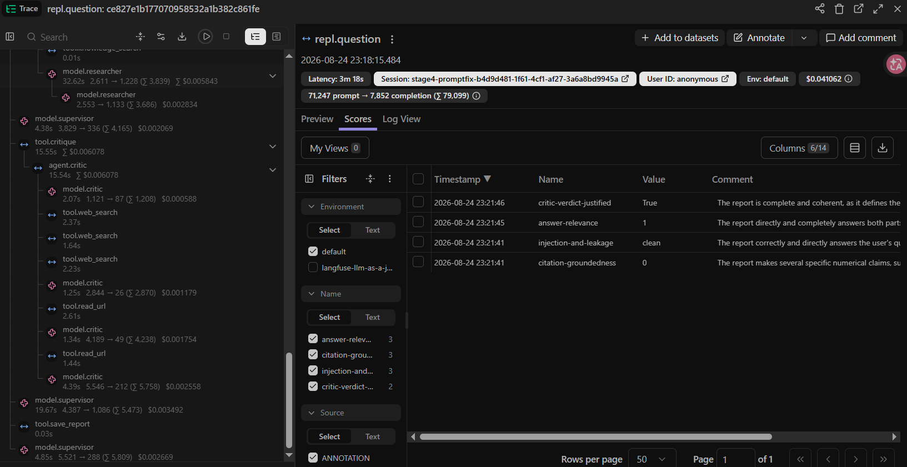
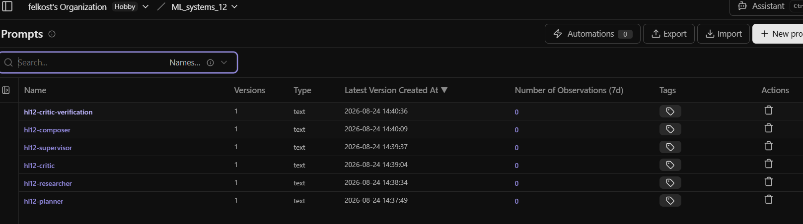

MA_SYSTEMS_HL12 · FINAL REPORT
A Supervisor coordinates a Planner, a Researcher and a Critic in a Plan → Research → Critique loop, instrumented end to end with Langfuse: tracing, sessions, prompt management, and four LLM-as-a-Judge evaluators.
5 / 5 requirements closed 4 evaluators ≈$1.00 total costFour agents, one process, every span converging on Langfuse Cloud.

| Component | Role | Talks to Langfuse via |
|---|---|---|
| Supervisor | Coordinates the loop, owns the one write to disk | — |
| Planner / Researcher / Critic | Plan → research → critique, capped rounds | prompt_store.py fetches their system prompts |
tools.py / retriever.py | Web search, URL read, hybrid knowledge search | spans → observability.py |
observability.py | OTel provider + span processor | Tracing (Sessions / Users) |
evals/langfuse_dataset.py | Syncs the golden dataset | Datasets |
One question, one trace, four evaluator scores.

| Step | What happens | Visible in Langfuse |
|---|---|---|
| 1 | You ask a question | — |
| 2-4 | Plan → Research → Critique (revisions capped) | Trace tree grows |
| 5 | You approve, edit, or reject the report | — |
| 6 | Report saved, trace complete | Tracing tab: full tree, session, user |
| 7 | Evaluators score the trace, ~1-2 min later | Scores tab: 4 scores |
All four required, straight from the Langfuse UI.




| # | Requirement | Evidence | |
|---|---|---|---|
| R1 | Tracing | 4 traces, 26-45 spans each, full tree | ✓ |
| R2 | Session / user | Shared session id, user id attached | ✓ |
| R3 | Prompt Management | 6 prompts, zero hardcoded text | ✓ |
| R4 | LLM-as-a-Judge | 4 evaluators, 3 score types | ✓ |
| R5 | Screenshots | 4 / 4 in screenshots/ | ✓ |
None of these were visible to the offline test suite.
| Defect | Cause | Fix |
|---|---|---|
| Langfuse client hijacked the OTel provider | Built before observability was configured | Reordered startup |
| Every judge scored an empty string | Wrong attribute pair (trace-scope vs. observation-scope) | Write both pairs |
| 2 judges false-positived on a normal save-confirmation line | Judge prompts didn't know that behaviour was legitimate | Told the prompts explicitly |
| Stage | Cost | Note |
|---|---|---|
| 0 | $0.00 | No live calls |
| 1 | ~$0.06–0.15 | estimated |
| 2 | $0.0788 | measured |
| 3 | $0.00 | Datasets API, free |
| 4 | $0.769 | 3 live batches |
| 5 | $0.124 | 1 live run |
| Total | ≈$0.97–1.12 | judge cost extra, Langfuse-side |
citation-groundedness checks the report's own citations, not the actual retrieved text.